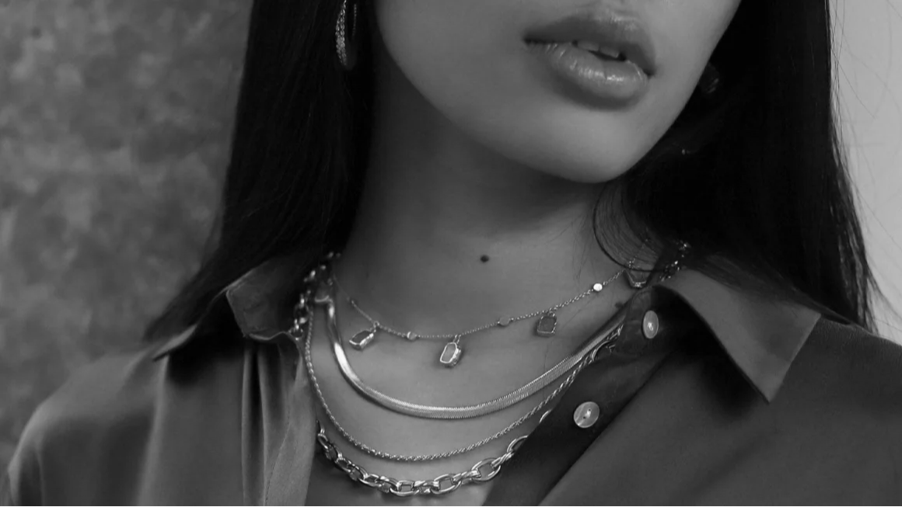
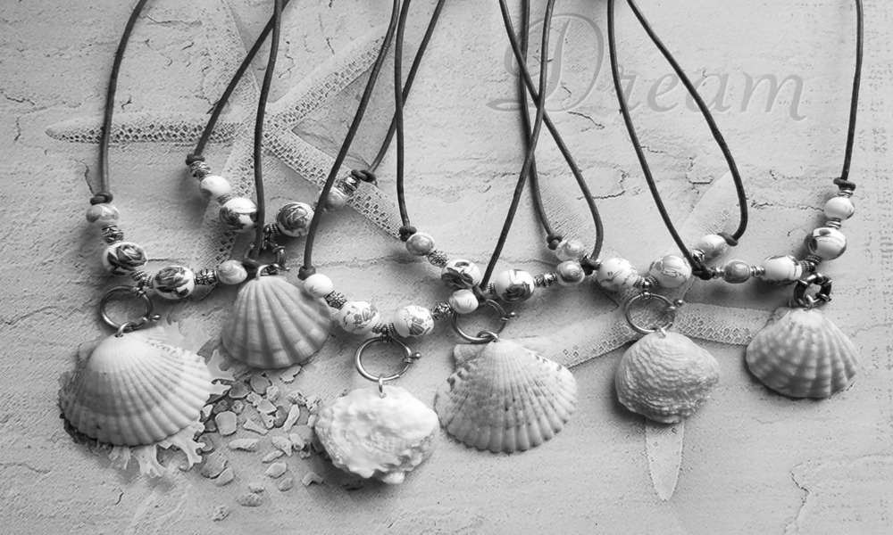
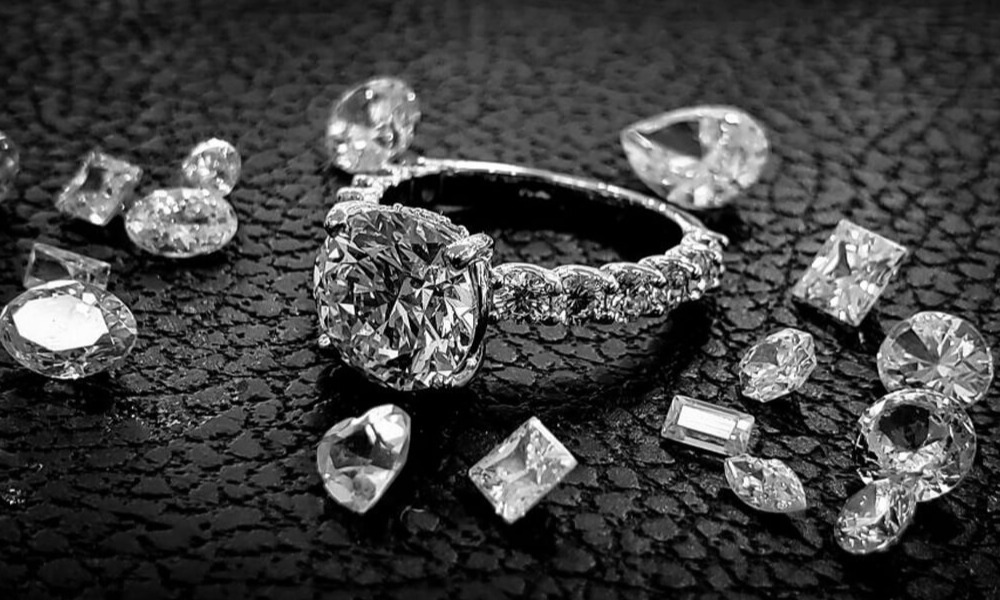
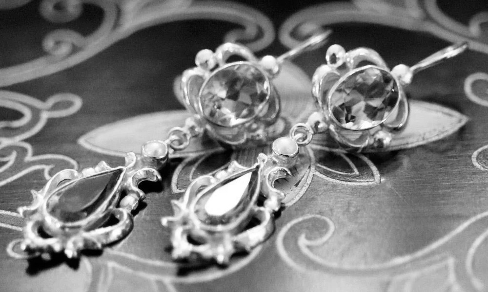
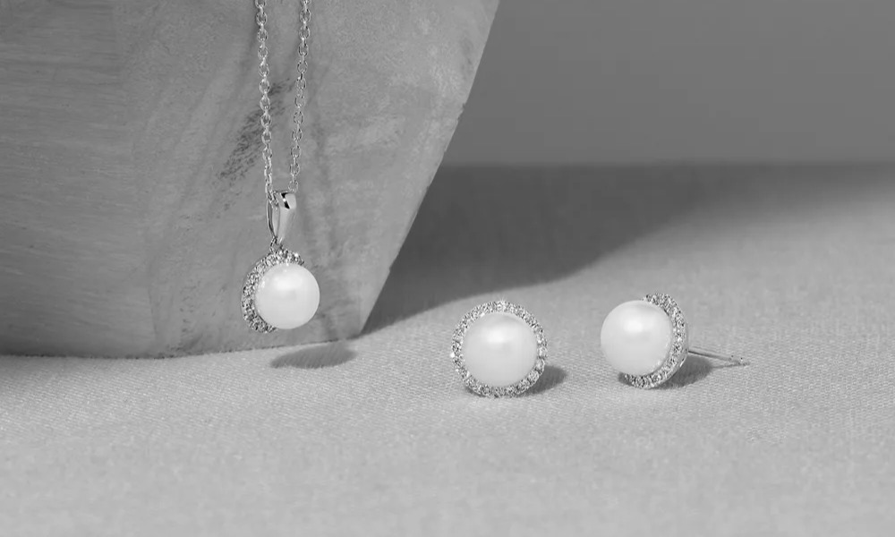

About us
Welcome to Divine Desires, where elegance meets expression by way of exquisite jewels crafted exclusively for women. We at Divine Desires believe in decking every woman up with a standard that imitates herself through style, elegance, and the beauty within.
We understand jewelry as more than just an accessory; it embodies the statement of identity, symbolizes love and affection, and holds moments cherished and memories made. That's the reason we have tried to pull together the most diverse set of designs, be it classic elegance or cutting-edge modernity, to ensure there is something fit for every occasion and personality.
But Divine Desires is more than the jewelry that we offer; it's about the experience that we offer. We are committed to delivering not just products, but also exceptional service that delights and exceeds expectations. From shopping for yourself to finding that perfect gift, our expert team will be there at your every call to ensure a seamless and pleasurable experience.
Thank you for choosing Divine Desires to be part of your journey. We would like to take this opportunity and give our best wishes that our collection may only hit you somewhere deep down your soul and induce it to indulge in divine desires. Love and gratitude, The Divine Desires Team
Fun facts
-
Jewelry has adorned humans for over 100,000 years, with the oldest known pieces crafted from shells.
-
The Hope Diamond is rumored to be cursed, bringing misfortune to its owners.
-
Victorian jewelry often conveyed hidden messages, with specific pieces symbolizing responses to love.
-
Pearls are the only gemstones created by living creatures, forming inside oysters over several years.



